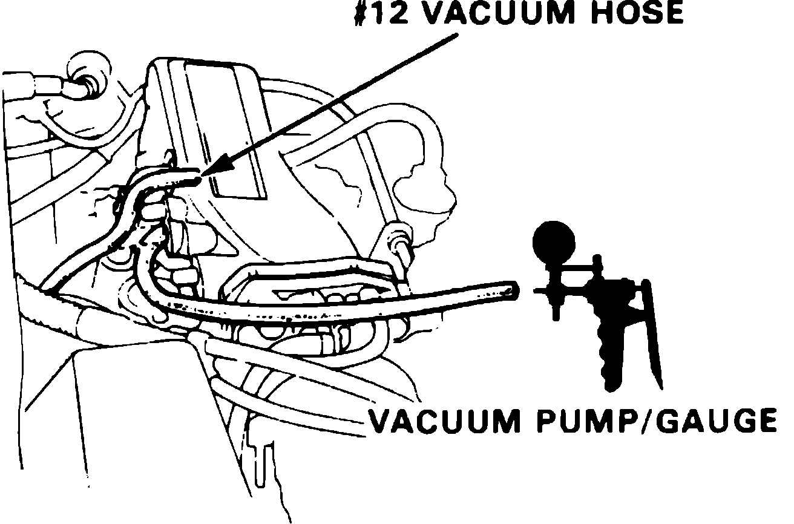
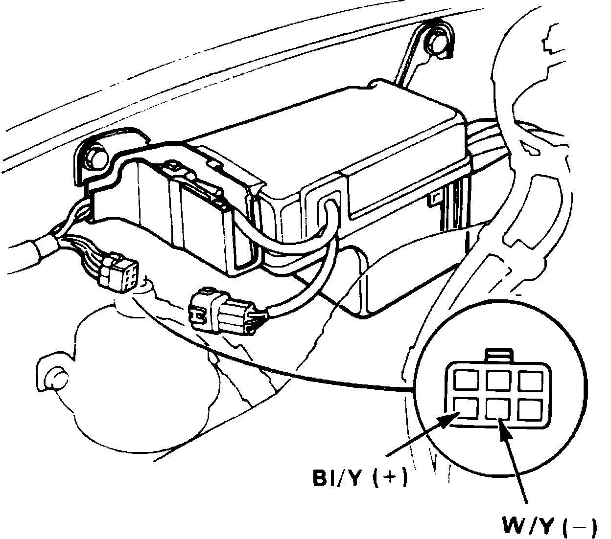

Vacuum Advance Control Solenoid: Testing and Inspection
Fig. 1 No. 12 Vacuum Hose Location:

Fig. 2 6 Pin Connector Terminal Identification.:

INTEGRA
1. Start engine and allow to reach normal operating temperature (cooling fan cycling).
2. Disconnect No. 12 vacuum hose, Fig. 1, from intake manifold and check for vacuum with suitable gauge.
3. If no vacuum is present, check vacuum port for obstruction. If vacuum is available, check vacuum line for improper connection, cracks, blockage or disconnection. If vacuum line is OK, reconnect No. 12 vacuum line and proceed to next step.
4. Disconnect 6 pin connector, then attach positive probe of voltmeter to Bl/Y terminal and negative probe to W/Y terminal of connector, Fig. 2.
5. If voltage is present with engine idling, replace solenoid valve and repeat test. If voltage is not present, proceed to next step.
6. Attach positive probe of voltmeter to Bl/Y terminal and negative probe to Attach positive probe of voltmeter to Bl/Y terminal and negative probe tobody ground, then observe voltage. If no voltage is present, repair open or short in Bl/Y wire between solenoid valve and No. 4 fuse. If voltage is present, check for open in W/Y wire between solenoid valve and ECU. If wire is OK, check the ECU as outlined in ``Fuel Injection.''
7. Attach positive probe of voltmeter to Bl/Y terminal and negative probe to W/Y terminal of connector, Fig. 2, then crack open and release throttle and observe voltmeter. Voltage should momentarily drop to zero. If voltage drops to zero, replace solenoid valve and repeat test. If voltage is not as specified, proceed to next step.
8. Check W/Y wire for short circuit between solenoid valve and ECU. If wire is damaged, repair wire and repeat test. If wire is OK, check the ECU as outlined in ``Fuel Injection.''